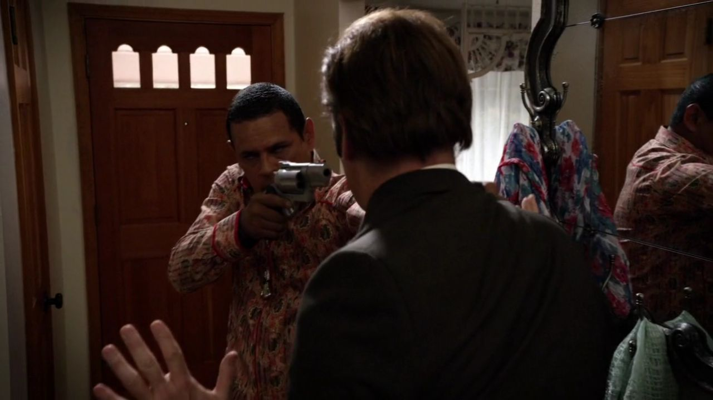
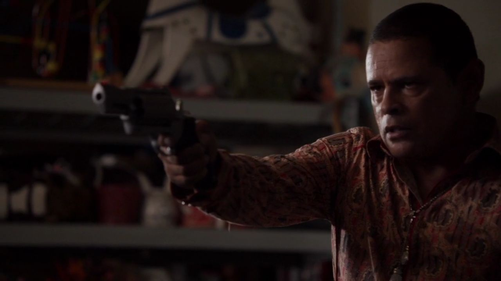
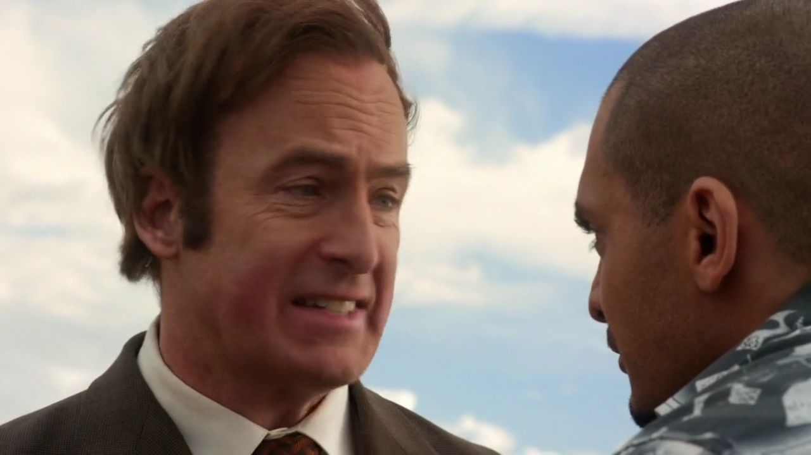
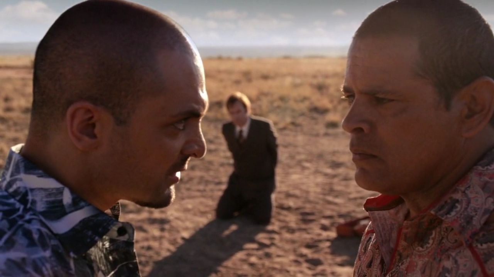
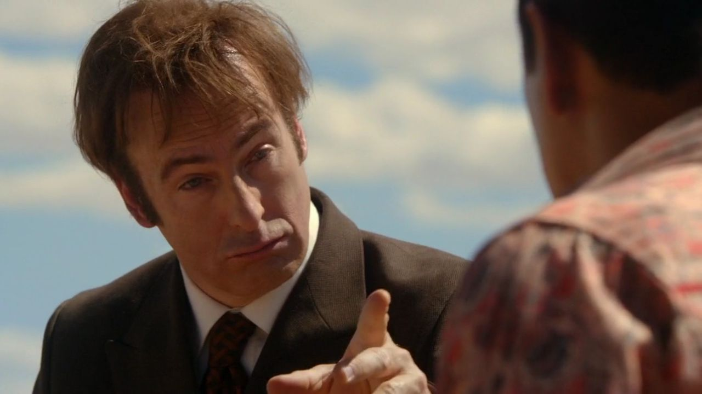
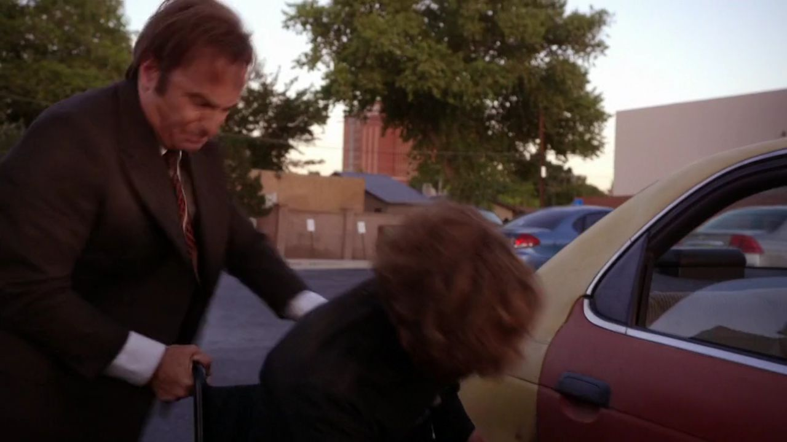
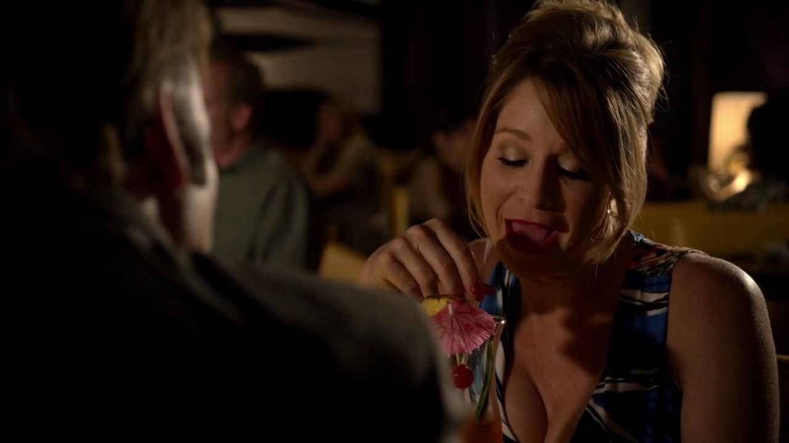
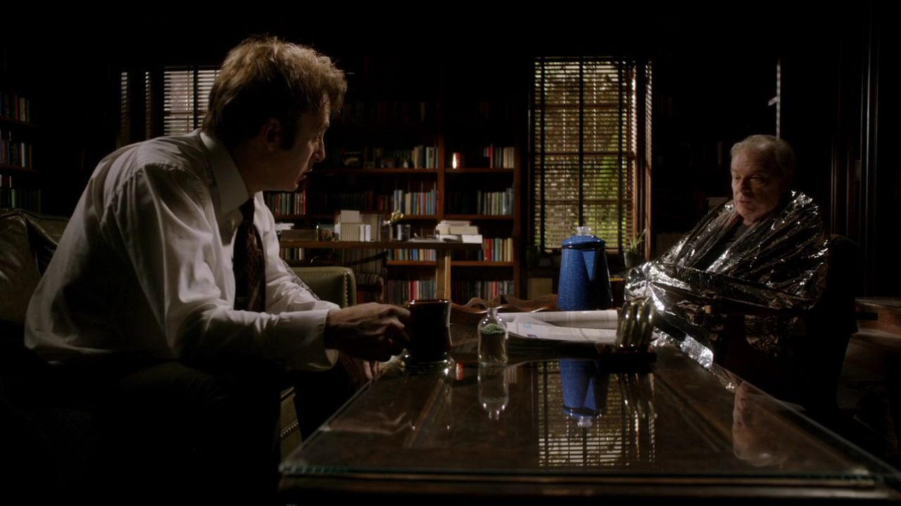
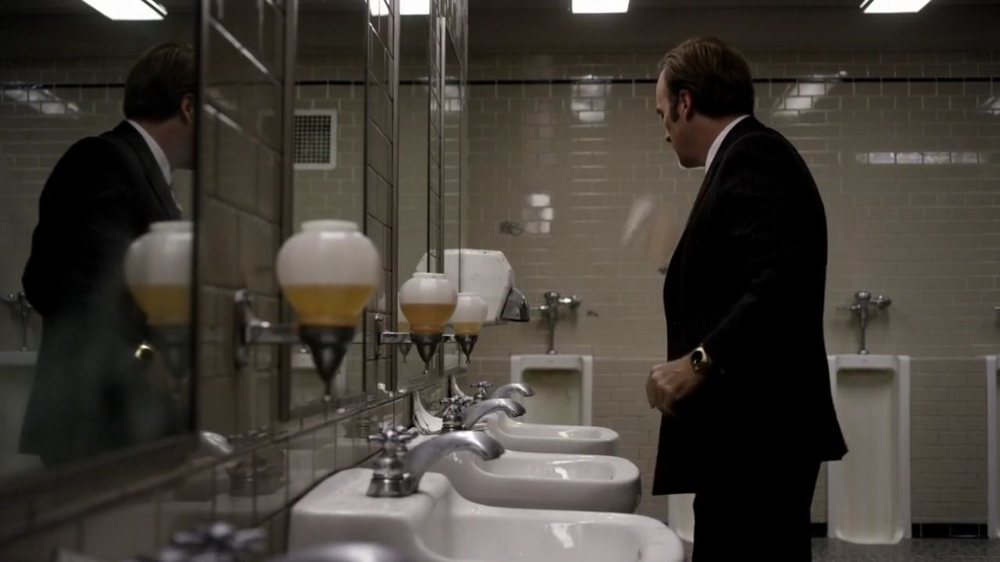

01
图科家 / 门内
他想解释一场误会，先得让对方听。

剧情事实吉米被图科持枪制住。他解释滑板兄弟本来针对别人，要求见到两人，希望把事件限制为一次误认目标的骗局。 [1][2]
这一场为什么重要 · 个人解读
对话先从“我们是谁”开始。吉米必须让一个已经使用暴力的人接受另一套事件版本；执照和措辞在这里没有天然权威。他需要找到对方愿意理解的理由，而不是再把预演过的救场台词说一遍。
因此 →解释暂时打开了空间，接下来的指认又把它关上。

风骚律师 · 第一季第 02 集
一次设局，撞进真正的暴力。
一场谈判，留下无法轻易摆脱的代价。
剧透边界 截至 S01E02，含本集结尾
10 个剧情节点 · 5 位人物 · 04 组冲突第一集的假车祸并没有给吉米带来委托，反而把他送进图科家。第二集把他的口才放到最危险的考场：先争取不被杀，再争取让别人活下来。危险过后，他试图重新投入正常工作，却发现自己展示的能力，也被纳乔记住了。
读这一集，跟住三件事谁能决定惩罚 / 为什么回头救人 / 谁看中了他的能力

三幕梳理本集。每一场都区分剧情事实与个人解读，把行动、动机和后果连起来。
先解释自己是谁。

剧情事实吉米被图科持枪制住。他解释滑板兄弟本来针对别人，要求见到两人，希望把事件限制为一次误认目标的骗局。 [1][2]
对话先从“我们是谁”开始。吉米必须让一个已经使用暴力的人接受另一套事件版本；执照和措辞在这里没有天然权威。他需要找到对方愿意理解的理由，而不是再把预演过的救场台词说一遍。
因此 →解释暂时打开了空间，接下来的指认又把它关上。

剧情事实吉米让其中一人开口，对方立刻指认他是骗局的策划者。图科因此把吉米与两人一起带到沙漠。 [1][2]
同伙没有按他设定的角色行动。他们此刻最想做的是摆脱惩罚，而不是保全导演。首集里“控制他人的表演”已经失效，到了这里，吉米必须承担自己确实策划过的事，不能只站在无辜律师的位置求饶。
因此 →他从解释者，变成需要被审问的人。

剧情事实在威胁下，吉米一度谎称自己为联邦机构工作；纳乔继续追问后，他承认自己是律师，原计划骗取凯特曼家的信任。 [1][2]
这不是一场越编越精彩的即兴表演。联邦身份带来的威慑，也可能使对方更想灭口。吉米只有回到能够解释细节的真实经历，才让纳乔重新判断风险。语言能救他，但不能保证每一种临时编出来的说法都有用。
因此 →纳乔开始把他视为一个有代价的普通律师。
身份的说服依赖对方愿意承担的风险。
有机会离开，却继续谈判。

剧情事实纳乔指出杀死律师可能引来注意，劝图科放走吉米。图科答应放他，却仍准备处置滑板兄弟。 [1][2]
纳乔没有诉诸抽象的仁慈。他抓住图科可能接受的后果：事情闹大会给所有人带来麻烦。这让他的冷静显得有效，也露出限度——说服放过一个有调查风险的律师，并没有同时解决另外两人的命运。
因此 →吉米已经可以走，但他没有立刻走。

剧情事实吉米返回谈判，把两人的行为重新解释为嘴上冒犯，反复争取降低惩罚。图科最终同意每人只打断一条腿。 [1][2]
这场辩护借用了法律中比例与处罚的语言，却没有真正的法庭可以执行边界。吉米所能争取的是一个暴力者当下愿意接受的限制。他救下了生命，也没能取消伤害；把它写成漂亮的口才胜利，会漏掉现场不可选择的残酷。
因此 →人活下来了，折断骨头的声音仍然留在他身上。

剧情事实图科执行断腿惩罚，吉米随后把受伤的两人送去医院。骗局没有产生委托，却留下了真实伤势和医疗费用。 [1][2]
前面的一切安排都以可控制的假伤为起点，结尾却变成不可撤回的真伤。吉米没有在获释后撇下两人，这份责任感值得保留；它也提醒我们，善后并不能删除危机如何被制造的。
因此 →离开危险现场，不等于恢复正常。

剧情事实约会中，邻桌折断面包棒的声音勾起断腿的记忆。吉米难以继续用餐，走进洗手间呕吐。 [1][2]
剧集没有用一段自白宣布他受到多大打击，而让普通声响突然侵入日常。刚才还能不断说话的人，现在先被自己的身体打断。这里显示的是创伤般的余震，不需要替他下临床诊断，也能理解“我已经处理好了”为什么并不等于事情结束。
因此 →他回到哥哥家，试图找回熟悉的秩序。
口才换来生还，没有取消真实伤害。
在正常工作里重建边界。

剧情事实喝醉的吉米忘记把手机留在屋外。次日查克提到看过滑板兄弟的医院账单，吉米坚称自己不会重返过去的骗局生活。 [1][2]
查克看见的是让人警惕的迹象，观众却知道吉米还做了救人的努力。两边拥有的信息不同，使一场看似普通的保证变得吃力：他确实越了线，也确实想停下来。不能把他的承诺当成已经证明的未来，同样不能因此抹掉当下的挣扎。
因此 →要让这句保证成立，他必须重新过正常工作的日子。

剧情事实一段工作蒙太奇呈现吉米反复接案、出庭、领报酬，仍要面对停车验证与琐碎事务。他继续做正式的刑事辩护工作。 [1][2]
重复在这里有两种重量：报酬仍让生活紧绷，但程序也给他一个不必制造事件就能使用本领的地方。忙碌不是对过去的清零，而是一种具体的重新开始。镜子前的自我动员，让表演能力暂时回到工作，而不是变成骗局。
因此 →他以为办公室终于迎来客户，来的却是纳乔。

剧情事实纳乔提出抢走凯特曼家的钱，愿给吉米报酬。吉米拒绝，强调自己是律师；纳乔留下联系方式，让他想清楚再打来。 [1][2]
沙漠里的说服能力同时产生了另一种声誉：他能处理边缘人物，也知道有钱的目标在哪里。吉米把职业身份当作退出的理由，纳乔却把共同经历看作已经建立的联系。拒绝真实发生，诱惑也没有因一句拒绝消失。
因此 →这次救命谈判，成了下一次危险邀请的来历。
一次拒绝已经作出，危险联系仍然存在。
切换故事阶段，再点击角色，查看本集行动、个人诉求与关系变化。
图科家中的解释破裂，三人被带到沙漠。吉米尚未知道纳乔会提出生意。
关系图只归纳本集已展示的行动与联系，不将后续动机提前写入。 人物照统一登记并跨集复用；阶段说明含个人解读，连线不表示每个人已知道全部信息。
按剧情归纳三次立场变化，再把结果与代价并排看。
个人解读沙漠里，他必须让自己的话持续有效；餐厅里，他却无法阻止一个声音把自己击倒。两幅画面共同定义这次救人：行动中可以异常能干，事后仍要承受自己经历和参与造成的伤害。
四组冲突深读 · 以下为个人解读，事实边界随卡片标注。
吉米不能宣布图科没有惩罚权，更不能要求一个不存在的法庭介入。他先接受对方认为冒犯必须付代价的前提，再不断缩小可以接受的处罚。谈判的聪明，在于找到对方仍愿意听的词。
这种聪明并不让现场变得公平。最终的伤害也没有得到受害者同意。把结果称为救命，可以承认他坚持留下的努力；把过程写成法律终于主持公道，则超出了画面真正发生的事。
事实边界：本集发生的是暴力胁迫下的谈判，不是合法判刑。
英文短句核对非官方对白转录；中文为本页自译，潜台词属于个人解读。
Let the punishment fit the crime.惩罚应当与过错相称。中文自译
他尝试把图科的报复，转入一个可以讨论尺度的框架。
使用比例的语言，是为了减少伤害；这里没有一个能保障比例原则的制度。
本页选用短句共 16 个英文词。配图呈现相应人物与场景，不逐句指认发声瞬间。核对对白来源 ↗
只在截至本集的情节中阅读；以下均为个人解读。


吉米拒绝了新的提议，也没有失去既有困境。
他接下来怎样保护别人，又怎样保护自己的边界，
仍需要一次次作出选择。
已经知道 · 剧情事实滑板兄弟获救但受伤；吉米重新执业，并拒绝协助抢走凯特曼家的钱。
还不能预先回答纳乔会不会行动、吉米能否兑现不再越界的承诺，本集尚未给出结果。
剧透截至第一季第2集，包含本集结尾。不涉及后续集数或《绝命毒师》的具体揭示。 不用后续的结果，替此刻的人物决定动机。